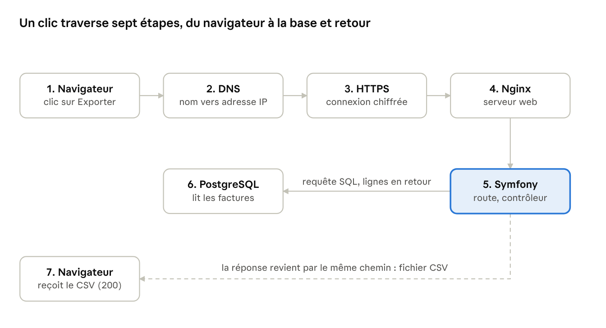
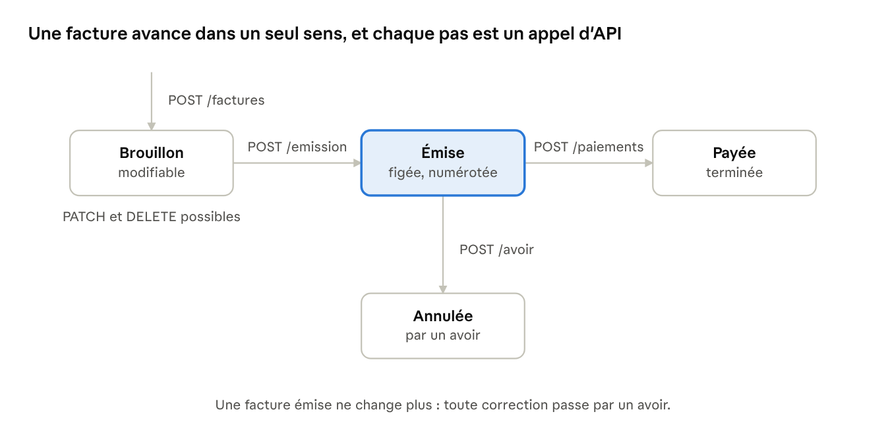
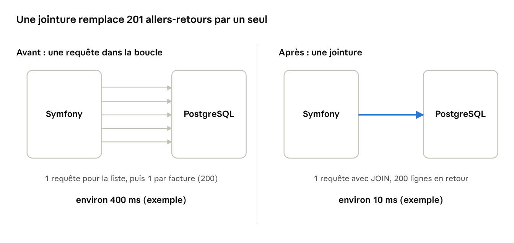
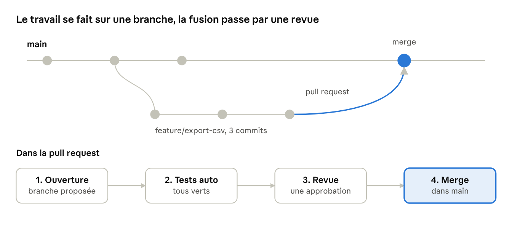

Module 1 : fondamentaux du web et du logiciel
Ce que vous saurez faire
Ce module donne la carte du terrain : après lui, vous saurez situer un problème dans la chaîne qui va du clic d'un utilisateur jusqu'à la base de données. Vous n'apprendrez pas à tout programmer. Vous apprendrez à comprendre ce que font les agents IA et à leur poser les bonnes questions.
À la fin du module, vous saurez :
- décrire, sans notes, le trajet d'une requête dans Facturo ;
- lire un échange HTTP et deviner d'où vient un problème grâce au code de statut ;
- juger si une API est bien conçue : ressources, verbes, codes de retour ;
- choisir entre une base SQL et une base de documents pour un besoin donné ;
- repérer un problème N+1 dans un code et dans un journal de requêtes ;
- suivre un flux Git complet : branche, commit, demande de fusion, conflit, fusion.
| Prérequis | Aucun en programmation. Savoir ouvrir un terminal. |
| Durée estimée | 12 heures, sur deux semaines (environ 6 heures par semaine) |
| Lien avec Facturo | Ce module décrit le terrain où Facturo vit : requêtes, API, base de données, dépôt de code. |
| Matériel | Un navigateur, un terminal avec curl et git, et un petit projet à manipuler (voir ci-dessous). |
Rappel : Facturo. Tous les exemples du cursus viennent de Facturo, une application fictive de facturation pour indépendants et petites entreprises. Elle gère des clients, des devis et des factures, exporte un fichier CSV pour le comptable, encaisse les paiements en ligne et envoie des rappels d'impayés. Elle se compose d'une API Symfony 7 (PHP 8.3), d'un front React, d'une base PostgreSQL et d'un cache Redis, le tout dans des conteneurs Docker sur un serveur loué.
Pour les ateliers, il vous faut un petit projet à manipuler. Si vous n'en avez pas, demandez à un agent IA de générer un squelette Facturo à partir de ce rappel, puis relisez-le : c'est déjà un exercice. Les noms, montants et dates de ce cursus sont inventés.
Leçon 1.1 : que se passe-t-il quand on clique sur « Exporter » ?
Un clic dans un navigateur déclenche une chaîne de sept étapes, et chaque problème se situe sur l'une d'elles. Marie Giraud, qui gère un cabinet comptable de 12 personnes, ouvre Facturo et clique sur « Exporter les factures de mars ». Quelques secondes plus tard, un fichier CSV arrive dans son dossier de téléchargements.
Pour comprendre ce trajet, pensez à l'envoi d'une lettre recommandée à un service d'archives. Vous cherchez l'adresse dans un annuaire (le DNS). Vous scellez l'enveloppe pour que personne ne la lise en route (le chiffrement HTTPS). Un réceptionniste (le serveur web Nginx) la remet au bon service (l'application Symfony). Ce service demande les dossiers aux archives (la base PostgreSQL), puis renvoie la réponse par le même chemin.
Le client est le programme qui envoie la demande : ici, le navigateur de Marie. Le serveur est le programme qui répond. Une requête est la demande, une réponse est ce qui revient. Tout le web fonctionne ainsi, y compris les appels entre deux logiciels.

Lire le schéma.
- Le navigateur de Marie prépare la demande : « donne-moi les factures de mars ».
- Le DNS traduit le nom
facturo.exampleen adresse IP, comme un annuaire traduit un nom en numéro. - Une connexion HTTPS chiffrée s'établit : personne ne peut lire la demande en route.
- Nginx, le serveur web, reçoit la demande et la passe à l'application.
- Symfony choisit le bon contrôleur, applique les règles de Facturo et interroge la base (étape 6), puis renvoie le CSV (étape 7).
Où chercher selon le symptôme. Savoir à quel étage se trouve un problème évite de chercher au mauvais endroit.
| Ce que l'on observe | Étage probable | Premier réflexe |
|---|---|---|
| « Ce site est introuvable » | DNS | Vérifier le nom de domaine et ses enregistrements |
| Avertissement de sécurité dans le navigateur | HTTPS | Vérifier la date d'expiration du certificat |
| Erreur 502 « Bad Gateway » | Nginx n'arrive pas à joindre l'application | Regarder si le service PHP tourne |
| Erreur 500 | Code de l'application (Symfony) | Lire le journal d'erreurs de l'application |
| Page ou export très lent | Souvent la base de données | Compter et mesurer les requêtes SQL |
| Le résultat est faux mais sans erreur | La logique métier dans le code | Rejouer le cas avec des données connues |
À retenir.
- Une requête traverse le DNS, HTTPS, le serveur web, l'application et la base, puis revient.
- Le code de statut et le symptôme indiquent l'étage où chercher.
- Un agent qui modifie le code ne règle que l'étage « application » : ne lui demandez pas de réparer un certificat expiré.
Erreurs fréquentes. Accuser le code alors que le problème est un certificat ou un nom de domaine. Relancer l'application au hasard sans lire le journal d'erreurs.
Leçon 1.2 : lire un échange HTTP
HTTP est le langage que parlent un client et un serveur, et ses codes de statut disent en un chiffre si la demande a réussi et de quel côté se trouve l'erreur. Une requête contient une méthode (ce qu'on veut faire), une adresse, des en-têtes (des informations sur la demande) et parfois un corps (des données). La réponse contient un code de statut, des en-têtes et un corps.
L'outil curl permet de rejouer une requête depuis le terminal. L'option -i affiche les en-têtes de la réponse. Voici une lecture de facture dans Facturo.
curl -i https://facturo.example/api/v1/factures/42 \
-H "Authorization: Bearer eyJhbGciOi..."HTTP/2 200
content-type: application/json
cache-control: private, no-store
{"id":42,"numero":"FAC-2026-0042","statut":"émise",
"total_ht":"1250.00","taux_tva":"0.200","client_id":7}La première ligne donne le statut : 200 signifie « tout va bien ». L'en-tête content-type dit que le corps est du JSON, un format texte que les logiciels lisent facilement. L'en-tête cache-control interdit à un intermédiaire de garder une copie : c'est utile pour des données de facturation.
Les codes de statut
Le premier chiffre du code indique la famille, et cette famille indique qui doit agir.
| Famille | Sens | Qui doit agir | Exemples dans Facturo |
|---|---|---|---|
| 2xx | Succès | Personne | 200 lecture réussie, 201 facture créée, 204 brouillon supprimé (rien à renvoyer) |
| 3xx | Redirection | Le client suit la nouvelle adresse | 301 l'ancienne adresse /api/factures a changé |
| 4xx | Erreur du client | Celui qui envoie la demande | 401, 403, 404, 409, 422, 429 |
| 5xx | Erreur du serveur | L'équipe qui exploite le serveur | 500, 502, 503, 504 |
Les quatre erreurs les plus fréquentes montrent comment le détail change le diagnostic.
# 401 : le serveur ne sait pas qui vous êtes (jeton absent ou expiré)
curl -i https://facturo.example/api/v1/factures/42
# HTTP/2 401 {"erreur":{"code":"non_authentifie","message":"Connexion requise."}}
# 404 : cette facture n'existe pas
curl -i https://facturo.example/api/v1/factures/99999 -H "Authorization: Bearer ..."
# HTTP/2 404 {"erreur":{"code":"facture_introuvable","message":"Aucune facture 99999."}}
# 422 : la demande est bien formée mais son contenu est invalide
curl -i "https://facturo.example/api/v1/factures/export?mois=2026-13" -H "Authorization: Bearer ..."
# HTTP/2 422 {"erreur":{"code":"mois_invalide","message":"Format attendu : AAAA-MM."}}
# 500 : le serveur a planté, ce n'est pas la faute de l'appelant
# HTTP/2 500 {"erreur":{"code":"erreur_interne","message":"Une erreur est survenue."}}Une confusion classique : 401 signifie « je ne sais pas qui vous êtes » (authentification), et 403 signifie « je sais qui vous êtes, mais vous n'avez pas le droit » (autorisation). Si Marie lit la facture d'un autre cabinet, elle doit recevoir 403 (ou 404 pour ne pas révéler que la facture existe). Pour un agent IA, cette distinction est décisive : une fonction « connecté » sans contrôle des droits laisse chaque utilisateur lire les données de tous les autres.
Les méthodes
| Méthode | Rôle | Modifie des données ? | Répéter la demande donne le même résultat ? |
|---|---|---|---|
GET | Lire | Non | Oui |
POST | Créer ou déclencher une action | Oui | Non |
PUT | Remplacer entièrement | Oui | Oui |
PATCH | Modifier en partie | Oui | Souvent oui |
DELETE | Supprimer | Oui | Oui |
La dernière colonne s'appelle l'idempotence. Une opération idempotente répétée dix fois laisse le système dans le même état qu'après une seule fois. Supprimer le brouillon 42 deux fois laisse le brouillon supprimé. Mais un POST de paiement envoyé deux fois peut encaisser deux fois : nous verrons la parade à la leçon suivante.
Qui êtes-vous, et que pouvez-vous faire ?
L'authentification vérifie l'identité. Facturo en propose deux formes. Le navigateur utilise une session : le serveur donne un cookie (un petit identifiant que le navigateur renvoie à chaque requête). Les autres logiciels utilisent un jeton (token) envoyé dans l'en-tête Authorization, souvent au format JWT, qui contient l'identité et une date d'expiration. OAuth 2 est un protocole standard qui permet à un logiciel d'agir au nom d'un utilisateur sans connaître son mot de passe : c'est ce que ferait un outil de comptabilité qui lirait les factures de Marie.
L'autorisation vérifie les droits, après l'authentification. Dans Facturo, la règle est simple : une personne ne voit que les factures de son propre cabinet.
À retenir.
- Le premier chiffre du statut dit qui doit agir : 4xx l'appelant, 5xx le serveur.
401signifie « qui êtes-vous ? »,403signifie « vous n'avez pas le droit ».- Un
POSTrépété peut faire deux fois l'action : il faut y penser pour les paiements.
Erreurs fréquentes. Renvoyer un 200 avec {"ok": false} dans le corps : les outils croient que tout va bien. Confondre 401 et 403. Afficher dans une erreur 500 le détail technique (nom de table, chemin de fichier) qui aide un attaquant.
Leçon 1.3 : concevoir l'API de Facturo
Une API bien conçue se devine : on peut prédire son adresse et son comportement sans lire la documentation. Une API (interface de programmation) est la porte par laquelle un logiciel en appelle un autre. Le front React de Facturo l'utilise, et demain le logiciel d'un comptable l'utilisera aussi. Le style le plus répandu s'appelle REST : chaque chose gérée (client, facture) est une ressource qui a une adresse, et le verbe HTTP dit l'action.
Voici l'API de Facturo, vue comme un orchestrateur doit savoir la relire.
| Action métier | Requête | Succès | Erreurs attendues |
|---|---|---|---|
| Créer un client | POST /api/v1/clients | 201 | 422 si l'e-mail ou le SIRET est invalide |
| Lister les factures | GET /api/v1/factures?statut=émise&page=2 | 200 | 401 |
| Lire une facture | GET /api/v1/factures/42 | 200 | 404, 403 |
| Modifier un brouillon | PATCH /api/v1/factures/42 | 200 | 409 si la facture n'est plus un brouillon |
| Émettre une facture | POST /api/v1/factures/42/emission | 200 | 409 si déjà émise, 422 si elle n'a aucune ligne |
| Enregistrer un paiement | POST /api/v1/factures/42/paiements | 201 | 409 si la facture est annulée |
| Émettre un avoir | POST /api/v1/factures/42/avoir | 201 | 409 si la facture n'est pas émise |
| Supprimer un brouillon | DELETE /api/v1/factures/42 | 204 | 409 si la facture est émise |
| Exporter un mois | GET /api/v1/factures/export?mois=2026-03 | 200 (CSV) | 422 si le mois est invalide |
Plusieurs règles se lisent dans ce tableau. Les noms sont au pluriel et décrivent des choses (factures), jamais des actions (getFactures). Les actions qui ne rentrent pas dans un simple verbe deviennent une sous-ressource (/emission, /avoir). La règle « une facture émise n'est pas modifiable » se traduit par un 409 (conflit avec l'état actuel) plutôt que par un 200 silencieux.
Une bonne erreur a toujours la même forme, lisible par une personne et par un programme :
{
"erreur": {
"code": "facture_non_modifiable",
"message": "Une facture émise ne peut pas être modifiée. Émettez un avoir."
}
}Trois points qui font la différence
La pagination. Une liste de 20 000 factures ne se renvoie pas d'un bloc. L'API en donne 50 à la fois et dit où trouver la suite : GET /api/v1/factures?page=2&limite=50 renvoie un champ "total": 1342 et un champ "page": 2. Sans pagination, un agent produit souvent un code qui marche sur 10 lignes de test et s'effondre en production.
L'idempotence des paiements. Si Marie double-clique sur « Payer » ou si le réseau coupe puis réessaie, le POST part deux fois. La parade est une clé d'idempotence : le client joint un identifiant unique (Idempotency-Key: 7c1e...) et le serveur, s'il le reconnaît, renvoie la première réponse au lieu de refaire l'action.
Le versionnage et le contrat. L'adresse contient /v1/ pour pouvoir un jour publier une /v2/ sans casser les logiciels qui utilisent la /v1/. Le contrat de l'API se décrit dans un fichier au format OpenAPI : la liste des adresses, des paramètres et des réponses. C'est le document à donner à un agent avant de lui faire écrire le front ou un test, car il évite qu'il invente des champs.

Lire le schéma.
- Un
POST /facturescrée une facture au statut brouillon. Tant qu'elle l'est, on peut la modifier ou la supprimer. POST /emissionla fait passer à émise : elle reçoit son numéro (FAC-2026-0042) et devient figée.POST /paiementsl'amène à payée quand le montant est encaissé.- Pour corriger une facture émise,
POST /avoircrée un avoir et passe la facture à annulée. Aucune flèche ne revient en arrière.
Le schéma sert aussi de test de lecture : si un agent propose un PATCH sur une facture émise, vous voyez immédiatement qu'aucune flèche ne l'autorise.
À retenir.
- Une bonne API a des noms au pluriel, des verbes HTTP justes et des erreurs au format constant.
- Les règles métier (numérotation, facture figée) se traduisent en états, en transitions et en codes
409. - Pagination, clé d'idempotence et contrat OpenAPI sont les trois choses à exiger d'un agent qui écrit une API.
Erreurs fréquentes. Mettre l'action dans l'adresse (/factures/delete?id=5). Tout faire en POST. Renvoyer toute la liste sans pagination. Laisser le front décider seul si une facture est modifiable : la règle doit aussi être vérifiée côté serveur.
Leçon 1.4 : SQL, documents et cache
Une base de données est le seul endroit où les erreurs coûtent cher, car on ne peut pas « ré-exécuter » une facture perdue. Il faut donc savoir lire un schéma, une requête et une transaction. Facturo utilise PostgreSQL, une base relationnelle : les données sont rangées dans des tables (comme des feuilles de calcul) reliées entre elles par des clés.
Lire un schéma
CREATE TABLE client (
id SERIAL PRIMARY KEY,
nom TEXT NOT NULL,
email TEXT NOT NULL,
siret CHAR(14) NOT NULL
);
CREATE TABLE facture (
id SERIAL PRIMARY KEY,
numero TEXT UNIQUE, -- NULL tant que c'est un brouillon
client_id INT NOT NULL REFERENCES client(id),
total_ht NUMERIC(12,2) NOT NULL,
taux_tva NUMERIC(4,3) NOT NULL DEFAULT 0.200,
statut TEXT NOT NULL DEFAULT 'brouillon',
date_emission DATE,
date_echeance DATE
);
CREATE TABLE ligne_facture (
id SERIAL PRIMARY KEY,
facture_id INT NOT NULL REFERENCES facture(id),
libelle TEXT NOT NULL,
quantite NUMERIC(10,2) NOT NULL,
prix_unit NUMERIC(12,2) NOT NULL
);Les mots à repérer : PRIMARY KEY (l'identifiant unique d'une ligne), REFERENCES (une clé étrangère : une facture pointe vers un client qui doit exister), UNIQUE (deux factures ne peuvent pas avoir le même numéro), NOT NULL (la valeur est obligatoire). Notez que les montants sont en NUMERIC et non en nombre à virgule flottante : 0.1 + 0.2 donne 0.30000000000000004 dans la plupart des langages, ce qui est inacceptable pour des euros.
Interroger : la jointure
Une jointure (JOIN) combine deux tables. Pour l'export de Marie, on veut le nom du client à côté de chaque facture de mars :
SELECT f.numero, c.nom, f.total_ht, f.taux_tva
FROM facture f
JOIN client c ON c.id = f.client_id
WHERE f.statut = 'émise'
AND f.date_emission >= '2026-03-01'
AND f.date_emission < '2026-04-01'
ORDER BY f.numero;La borne haute est < '2026-04-01' et non <= '2026-03-31' : cette forme reste juste même si la colonne contient une heure. Un index accélère ce genre de recherche, comme l'index d'un livre : CREATE INDEX ON facture (date_emission);. Sans lui, la base lit toutes les factures à chaque export.
Protéger la numérotation : la transaction
Une transaction regroupe plusieurs opérations en un bloc qui réussit en entier ou échoue en entier. Cette propriété, avec trois autres, forme l'acronyme ACID (atomicité, cohérence, isolation, durabilité). Facturo en a besoin pour la règle « numérotation continue sans trou » :
BEGIN;
UPDATE compteur_numero SET dernier = dernier + 1
WHERE annee = 2026 RETURNING dernier; -- renvoie 43
UPDATE facture
SET numero = 'FAC-2026-0043', statut = 'émise',
date_emission = CURRENT_DATE,
date_echeance = CURRENT_DATE + 30
WHERE id = 981 AND statut = 'brouillon';
COMMIT;Si le serveur plante entre les deux UPDATE, rien n'est enregistré : le compteur revient à 42 et aucun numéro n'est perdu. Un compteur automatique de base (SEQUENCE) ne convient pas ici, car il saute des valeurs quand une transaction échoue. C'est un exemple où un agent peut proposer la solution la plus courante et fausse pour la règle métier : c'est vous qui connaissez la règle.
Quand un document convient mieux
Les bases dites NoSQL regroupent des familles très différentes : documents (MongoDB), clé-valeur (Redis), colonnes, graphes. Leur point commun est de ne pas imposer le modèle en tables. Facturo en a un bon usage : le journal d'événements, où chaque action est enregistrée telle quelle.
{ "type": "facture_emise", "facture": "FAC-2026-0043", "par": "user_7",
"quand": "2026-03-14T09:12:00Z", "details": { "total_ht": "1250.00" } }
{ "type": "rappel_envoye", "facture": "FAC-2026-0031", "par": "systeme",
"quand": "2026-03-15T08:00:00Z", "details": { "canal": "email", "numero_rappel": 2 } }Le contenu de details change selon le type d'événement, on n'y fait presque jamais de jointure, et on ajoute des lignes sans jamais les modifier. Un document est alors plus simple qu'une table avec 30 colonnes presque vides. PostgreSQL sait aussi stocker du JSON (type JSONB), ce qui permet de garder une seule base.
| Besoin | Choix raisonnable | Pourquoi |
|---|---|---|
| Clients, factures, lignes, paiements | Tables SQL | Liens forts, règles d'intégrité, transactions |
| Journal d'événements, historique d'e-mails | Documents (ou JSONB) | Forme variable, écriture seule |
| Total du mois affiché sur le tableau de bord | Cache Redis | Calcul coûteux, lu souvent |
| Paramètres d'affichage d'un utilisateur | Document ou JSONB | Forme libre, jamais joint |
Le cache garde le résultat d'un calcul pour ne pas le refaire. Facturo met en cache le total du mois pendant 5 minutes. Le risque est de montrer une donnée périmée : après un paiement, le tableau de bord peut afficher l'ancien total jusqu'à cinq minutes. Il faut donc savoir ce que l'on accepte de montrer en retard, et ne jamais mettre en cache un montant utilisé pour décider d'un paiement.
Changer la base sans casser la production
Une migration est une modification versionnée du schéma, exécutée par un script. Pour ajouter un mode de paiement à la facture, on avance en trois temps : ajouter la colonne facultative, remplir les anciennes lignes, puis la rendre obligatoire. Chaque étape est compatible avec la version du code déjà en ligne, ce qui permet de déployer sans coupure et de revenir en arrière.
À retenir.
- Un schéma se lit par ses clés : clé primaire, clé étrangère, contrainte d'unicité.
- Une transaction protège une règle métier qui touche plusieurs lignes, comme la numérotation continue.
- SQL pour les données liées et strictes, documents pour les événements à forme libre, cache pour ce qui est cher et lu souvent.
Erreurs fréquentes. Stocker de l'argent en nombre à virgule flottante. Choisir NoSQL « parce que c'est moderne » pour des données très liées. Oublier l'index d'une colonne souvent filtrée. Modifier le schéma directement en production sans migration versionnée.
Leçon 1.5 : le problème N+1, ou pourquoi l'export est lent
Le défaut de performance le plus fréquent dans le code d'un agent est une boucle qui interroge la base à chaque tour. On l'appelle N+1 : une requête pour obtenir la liste de N lignes, puis N requêtes, une par ligne, pour compléter chacune. Imaginez un livreur qui rapporte un colis à la fois au lieu de charger le camion.
Voici l'export de Marie, tel qu'un agent pourrait l'écrire au premier essai.
$factures = $connection->fetchAllAssociative(
'SELECT * FROM facture WHERE date_emission >= :debut AND date_emission < :fin',
['debut' => '2026-03-01', 'fin' => '2026-04-01']
);
$lignes = [];
foreach ($factures as $f) {
// une requête par facture
$client = $connection->fetchAssociative(
'SELECT nom FROM client WHERE id = :id',
['id' => $f['client_id']]
);
$lignes[] = [$f['numero'], $client['nom'], $f['total_ht']];
}Le code est correct, lisible, et passe le test sur 3 factures. En production, avec 200 factures en mars, le journal des requêtes montre ceci :
SELECT * FROM facture WHERE date_emission >= '2026-03-01' AND date_emission < '2026-04-01'
SELECT nom FROM client WHERE id = 7
SELECT nom FROM client WHERE id = 12
SELECT nom FROM client WHERE id = 7
SELECT nom FROM client WHERE id = 7
... (196 lignes de plus)Cela fait 201 requêtes. Si chaque aller-retour coûte environ 2 millisecondes (chiffre d'exemple), l'export prend près de 400 ms à 200 factures, et plusieurs secondes à 5 000. Le client 7 est même interrogé plusieurs fois pour rien. Le signe qui doit vous alerter à la lecture : une requête à l'intérieur d'une boucle.
La correction fait faire le travail à la base, en une fois :
$lignes = $connection->fetchAllNumeric(
'SELECT f.numero, c.nom, f.total_ht
FROM facture f
JOIN client c ON c.id = f.client_id
WHERE f.statut = :statut
AND f.date_emission >= :debut AND f.date_emission < :fin
ORDER BY f.numero',
['statut' => 'émise', 'debut' => '2026-03-01', 'fin' => '2026-04-01']
);
Lire le schéma.
- À gauche, Symfony envoie une requête pour la liste, puis une requête par facture : chaque flèche est un aller-retour vers la base.
- Chaque aller-retour a un coût fixe, même pour une toute petite réponse. Le coût total croît avec le nombre de factures.
- À droite, une seule requête avec jointure ramène tout. La base est conçue pour ce travail et le fait en une dizaine de millisecondes (chiffre d'exemple).
Comment le détecter. Ne comptez pas sur un test avec 3 factures. Trois moyens, du plus simple au plus fiable : lire le code à la recherche d'une requête dans une boucle, regarder le nombre de requêtes affiché par la barre de débogage de Symfony pendant l'export, ou écrire un test qui impose une limite.
public function testExportDe200FacturesFaitAuPlusDeuxRequetes(): void
{
$this->creerFactures(200);
$compteur = $this->compteurDeRequetes();
$this->export->csv('2026-03');
$this->assertLessThanOrEqual(2, $compteur->total());
}Ce qu'il faut dire à l'agent. « Remplace la boucle par une jointure. Ajoute un test qui vérifie que l'export de 200 factures exécute au plus 2 requêtes. » Une consigne chiffrée et testable est bien plus efficace que « rends-le plus rapide ».
À retenir.
- Une requête dans une boucle est le signal à chercher en premier.
- Un test avec peu de données ne révèle pas le problème : il faut tester avec un volume réaliste.
- Une limite chiffrée (« au plus 2 requêtes ») est un critère de réussite vérifiable.
Erreurs fréquentes. Mettre en cache le résultat pour masquer un N+1 au lieu de le corriger. Charger toutes les colonnes (SELECT *) alors que l'export n'en utilise que trois.
Leçon 1.6 : Git, branches et demandes de fusion
Git garde l'historique de chaque fichier du projet et permet à plusieurs personnes (ou agents) de travailler en parallèle sans s'écraser. Un commit est une photo datée du projet, accompagnée d'un message. Une branche est une ligne de travail parallèle : on y essaie des changements sans toucher à la ligne de référence, appelée main. Une pull request (sur GitLab, on dit merge request) est la proposition de fusionner une branche dans main : elle déclenche les tests et la revue.
Voici le cycle d'un agent qui ajoute le filtre par mois à l'export.
git switch -c feature/export-csv # créer la branche et s'y placer
git add src/Export/ExportFactures.php # préparer le fichier
git commit -m "Export CSV : filtrer par mois"
git push -u origin feature/export-csv # envoyer la branche au serveurTrois commandes servent à lire plus qu'à écrire : git log --oneline -5 liste les cinq derniers commits, git diff main montre ce qui diffère de main, et git blame src/Billing/FactureCalculator.php indique qui a modifié chaque ligne, et dans quel commit. Cette dernière est précieuse pour comprendre pourquoi une ligne étrange existe.

Lire le schéma.
- La branche
feature/export-csvpart demainau deuxième commit et reçoit trois commits de travail. - Pendant ce temps,
mainne bouge pas, ou bouge sans rapport avec ce travail. - La pull request propose de ramener les trois commits dans
main. - Avant la fusion, les tests automatiques doivent être verts et une personne doit approuver le changement.
Un conflit, pas à pas
Un conflit apparaît quand deux branches modifient la même ligne : Git ne sait pas laquelle garder et demande à une personne de trancher. Sur sa branche, l'agent a transformé la constante du taux de TVA en nombre. Entre-temps, quelqu'un l'a transformée en chaîne sur main.
- On met la branche à jour :
git merge main. Git répondCONFLICT (content): Merge conflict in src/Billing/FactureCalculator.php. - On ouvre le fichier. Git a marqué les deux versions :
<<<<<<< HEAD
private const TAUX_PAR_DEFAUT = 0.20;
=======
private const TAUX_PAR_DEFAUT = '0.20';
>>>>>>> main- On comprend les deux intentions. Au-dessus de
=======, c'est la branche de l'agent : un nombre à virgule. En dessous, c'estmain: une chaîne, voulue pour éviter les erreurs d'arrondi. La règle de Facturo (montants au centime) donne raison àmain. - On garde la bonne version, on supprime les trois lignes de marqueurs, puis on relance les tests.
- On enregistre :
git add src/Billing/FactureCalculator.php, puisgit commit. Le conflit est résolu.
Pour annuler un changement déjà partagé, utilisez git revert <commit>, qui crée un commit inverse et garde l'historique. Les commandes qui réécrivent l'historique (git reset --hard, git push --force) effacent le travail des autres : elles sont réservées à ce que vous maîtrisez, jamais à une branche partagée.
Les bonnes habitudes. Branches courtes (un ou deux jours), un sujet par branche, un message de commit qui dit pourquoi. Une main protégée : aucune fusion sans tests verts ni revue. Un fichier .gitignore qui exclut les secrets et les dossiers générés.
À retenir.
- Une branche isole le travail, la pull request le soumet au contrôle,
mainne reçoit que du vérifié. - Un conflit n'est pas une erreur : c'est une question posée à quelqu'un qui connaît la règle métier.
git blameetgit logrépondent à « pourquoi ce code est-il là ? ».
Erreurs fréquentes. Un commit « modifications diverses » de 40 fichiers, impossible à relire. Un mot de passe commité par accident : même supprimé ensuite, il reste dans l'historique et doit être changé. Résoudre un conflit en gardant systématiquement sa version.
Leçon 1.7 : terminal, configuration et secrets
Savoir où regarder dans un projet vaut mieux que savoir tout écrire. Le terminal est la fenêtre où l'on tape des commandes : les agents IA y travaillent en permanence, et vous devez pouvoir lire ce qu'ils y font. Six commandes suffisent pour explorer Facturo.
| Commande | Ce qu'elle fait | Exemple dans Facturo |
|---|---|---|
ls | Liste les fichiers d'un dossier | ls src/ montre les modules : Clients, Facturation, Paiement, Export, Notifications |
cd | Entre dans un dossier | cd src/Export |
cat ou less | Affiche un fichier | less src/Export/ExportFactures.php |
grep -rn | Cherche un texte dans tous les fichiers | grep -rn "factures/export" src/ trouve où la route est définie |
tail -n 50 | Affiche la fin d'un fichier | tail -n 50 var/log/prod.log montre les 50 dernières lignes du journal |
git status | Dit ce qui a changé | Voir ce que l'agent a touché avant de relire |
Le projet lui-même se lit par quelques fichiers à l'endroit habituel.
| Fichier ou dossier | Ce qu'on y trouve |
|---|---|
composer.json | Les bibliothèques PHP dont dépend l'API |
package.json | Les bibliothèques JavaScript du front React |
config/routes/ | Les adresses de l'API et le code qui les traite |
src/ | Le code de l'application, un dossier par module |
tests/ | Les tests automatiques |
docker-compose.yml | Les services que l'application lance : API, base, cache |
.env.example | La liste des réglages attendus, sans leurs valeurs secrètes |
Configuration et secrets
Le même code tourne sur votre poste, sur le serveur de test et en production, avec des réglages différents : adresse de la base, clé du service de paiement, serveur d'e-mails. Ces réglages vivent dans des variables d'environnement, c'est-à-dire des valeurs fournies à l'application de l'extérieur plutôt qu'écrites dans le code. Un secret est une valeur qui donne un accès : mot de passe, clé d'API, jeton.
# .env.example : commité, sans aucune vraie valeur
DATABASE_URL=postgresql://facturo:CHANGE_ME@db:5432/facturo
PAIEMENT_CLE_SECRETE=CHANGE_ME
MAILER_DSN=smtp://CHANGE_ME@mail.example:587Le fichier avec les vraies valeurs (.env.local) est listé dans .gitignore pour ne jamais être envoyé dans le dépôt. Si un secret est commité par erreur, le supprimer ne suffit pas : il reste dans l'historique de Git. Il faut le considérer comme compromis, le révoquer chez le fournisseur et en créer un nouveau. C'est le cas n°2 du mini-jeu Chasse aux dérives, et l'une des fautes les plus communes des agents.
Les dépendances
Une dépendance est du code écrit par d'autres que votre projet utilise. Elle est listée dans composer.json (PHP) ou package.json (JavaScript), et les versions exactes installées sont figées dans un fichier de verrouillage (composer.lock, package-lock.json). Ce verrou garantit que tout le monde installe les mêmes versions. Une mise à jour de version majeure peut changer le comportement d'une bibliothèque : elle se fait dans une branche dédiée, avec les tests. Un agent qui ajoute une dépendance pour une tâche simple mérite toujours la question : « le langage ne le fait-il pas déjà ? ».
À retenir.
- On explore un projet par le terminal, les fichiers de configuration et les dossiers
src/ettests/. - Un secret n'est jamais dans le code : variable d'environnement,
.gitignore, et révocation en cas de fuite. - Toute nouvelle dépendance est une décision, pas un détail.
Erreurs fréquentes. Commiter .env avec les vraies valeurs. Laisser un agent mettre à jour toutes les dépendances d'un coup. Copier une clé de production dans le poste de développement.
Atelier guidé : suivre un export de bout en bout
Cet atelier relie toutes les leçons : vous suivez l'export de Marie depuis le navigateur jusqu'au code, comme le ferait un orchestrateur qui reprend un bug. Comptez une heure. Chaque étape dit ce que vous devez observer.
- Observer dans le navigateur. Ouvrez les outils de développement (touche F12), onglet « Réseau », puis cliquez sur « Exporter ». Résultat attendu : une ligne
GET /api/v1/factures/export?mois=2026-03, statut200, typetext/csv. - Rejouer avec curl. Copiez la requête (clic droit, « Copier en tant que cURL ») et exécutez-la dans le terminal avec
-i. Résultat attendu : les mêmes en-têtes, dontcontent-disposition: attachment; filename="factures-2026-03.csv". - Provoquer un 401. Relancez la commande sans l'en-tête
Authorization. Résultat attendu :401et un message d'erreur au format{"erreur": {...}}. - Provoquer un 422. Remettez le jeton et changez le mois en
2026-13. Résultat attendu :422avec le codemois_invalide. - Retrouver le code. Dans le projet, lancez
grep -rn "factures/export" src/. Résultat attendu : un seul fichier, le contrôleur ci-dessous. - Lire le contrôleur. Pour chaque bloc, dites à voix haute ce qu'il fait.
- Regarder les requêtes SQL. Ouvrez le journal de développement ou la barre de débogage de Symfony pendant l'export. Résultat attendu : soit 1 ou 2 requêtes (bon), soit une longue liste de
SELECT nom FROM client(c'est un N+1). - Écrire le compte rendu. En cinq lignes : le trajet, le résultat du test 401, celui du test 422, le nombre de requêtes, et ce que vous demanderiez à l'agent s'il fallait améliorer quelque chose.
#[Route('/api/v1/factures/export', methods: ['GET'])]
public function export(Request $request, ExportFactures $export): Response
{
$mois = (string) $request->query->get('mois', '');
if (!preg_match('/^\d{4}-(0[1-9]|1[0-2])$/', $mois)) {
return $this->json(['erreur' => [
'code' => 'mois_invalide',
'message' => 'Format attendu : AAAA-MM.',
]], 422);
}
return new Response($export->csv($mois), 200, [
'Content-Type' => 'text/csv; charset=utf-8',
'Content-Disposition' => 'attachment; filename="factures-' . $mois . '.csv"',
]);
}Comment lire ce contrôleur. La première ligne déclare l'adresse et la méthode acceptée. Le bloc if vérifie que le mois ressemble à 2026-03 et renvoie 422 sinon : c'est la validation de l'entrée. Le return final appelle le service d'export puis renvoie un fichier téléchargeable avec le statut 200. Le contrôleur ne contient pas de règle métier : il passe la main à ExportFactures, ce que l'on regarde de plus près au module 3.
Exercices
Chaque exercice se fait d'abord sans regarder le corrigé. Notez votre réponse par écrit, puis comparez.
Exercice 1 : où est le problème ?
Pour chaque symptôme observé sur Facturo, indiquez l'étage probable (DNS, HTTPS, serveur web, application, base de données) et le premier réflexe.
- a) Le navigateur affiche « connexion non sécurisée ».
- b) Erreur
502 Bad Gatewaysur toutes les pages. - c) L'export de mars met 12 secondes alors qu'il en prenait 1 le mois dernier.
- d) Depuis ce matin, toutes les requêtes du front reçoivent
401. - e) Un utilisateur ne peut plus ouvrir le site : « adresse introuvable ».
- f) Le CSV de mars contient des factures de février.
Corrigé
| Symptôme | Étage | Premier réflexe |
|---|---|---|
| a | HTTPS | Le certificat a probablement expiré : vérifier sa date de fin |
| b | Serveur web | Nginx ne joint plus l'application : vérifier que le service PHP tourne |
| c | Base de données | Compter les requêtes (N+1) et vérifier les index : le volume a grandi |
| d | Application (authentification) | Le jeton ou la clé qui le signe a changé ou expiré : regarder le déploiement du matin |
| e | DNS | Vérifier l'enregistrement du domaine : il a peut-être expiré ou été modifié |
| f | Application (logique) | Contrôler les bornes de dates et le fuseau horaire dans la requête |
Le symptôme (d) mérite une remarque : il touche tout le monde en même temps, donc la cause est commune (un changement) et non individuelle (un mot de passe oublié).
Exercice 2 : critiquer une API
Un agent propose ces quatre points d'entrée. Dites ce qui ne va pas et proposez la correction.
GET /api/getFactures
POST /api/factures/delete?id=5
GET /api/factures/5/payer
POST /api/factures → réponse : 200 {"ok": false, "msg": "client inconnu"}Corrigé
GET /api/getFacturesmet un verbe dans l'adresse et omet la version. Correction :GET /api/v1/factures.POST /api/factures/delete?id=5utilisePOSTpour supprimer et met l'action dans l'adresse. Correction :DELETE /api/v1/factures/5, qui répond204pour un brouillon et409pour une facture émise.GET /api/factures/5/payerest le plus grave : unGETne doit jamais modifier des données, car un navigateur ou un robot peut le rejouer sans le vouloir. Correction :POST /api/v1/factures/5/paiements, avec une clé d'idempotence.- Le
200avec"ok": falseannonce un succès alors que la demande a échoué. Correction :422(ou404si le client n'existe pas) avec l'objet d'erreur standard.
Exercice 3 : SQL, document ou cache ?
Pour chaque besoin de Facturo, choisissez un type de stockage et justifiez en une phrase.
- a) Les factures et leurs lignes.
- b) L'historique de tous les rappels envoyés, dont le contenu varie selon le canal (e-mail, SMS).
- c) Le nombre de factures impayées affiché sur le tableau de bord, consulté des milliers de fois par jour.
- d) Le solde exact à encaisser quand Marie clique sur « Payer ».
Corrigé
- a) Tables SQL : les données sont très liées (facture, lignes, client) et soumises à des règles strictes.
- b) Document ou
JSONB: la forme varie et on ne fait qu'ajouter des lignes. - c) Cache Redis, avec une durée de vie courte : le calcul est répétitif et un retard de quelques minutes est acceptable.
- d) Jamais de cache : le montant décisionnel se lit toujours dans la base, au moment du paiement, sinon on peut faire payer un ancien montant.
Exercice 4 : repérer le N+1
L'envoi des rappels d'impayés produit ce journal de requêtes. Combien de requêtes pour 400 factures impayées ? Comment corriger ?
SELECT id, client_id, total_ht FROM facture WHERE statut = 'émise' AND date_echeance < CURRENT_DATE
SELECT email FROM client WHERE id = 3
SELECT email FROM client WHERE id = 8
SELECT email FROM client WHERE id = 3
SELECT email FROM client WHERE id = 15
SELECT email FROM client WHERE id = 8Corrigé
C'est un N+1 : une requête pour la liste, puis une par facture, soit 401 requêtes pour 400 factures. Les clients 3 et 8 sont même lus deux fois. Deux corrections possibles : une jointure (JOIN client c ON c.id = f.client_id) qui ramène l'e-mail avec la facture, ou une seule requête WHERE id IN (...) sur les clients distincts. On ajoute un test qui impose « au plus 2 requêtes » pour 400 factures.
Exercice 5 : trancher un conflit
Voici un conflit dans FactureCalculator.php. Que faites-vous ?
<<<<<<< HEAD
$echeance = $emission->modify('+45 days');
=======
$echeance = $emission->modify('+30 days');
>>>>>>> mainCorrigé
La règle de Facturo est une échéance à 30 jours : la version de main est cohérente avec elle. Mais ne tranchez pas à la place de la personne qui décide : demandez pourquoi la branche utilise 45. Si c'est une dérive de l'agent, gardez 30. Si c'est une évolution voulue (un client négocie 45 jours), la règle change et il faut mettre à jour les tests et la documentation. Un conflit sur une règle métier est toujours une question pour le responsable du produit, pas seulement pour le développeur.
Quiz d'auto-évaluation
Répondez à voix haute, puis lisez la réponse. Une question ratée indique la leçon à relire.
| Question | Réponse | Pourquoi |
|---|---|---|
1. Un export renvoie 502. Dans quel étage cherchez-vous en premier ? | Le serveur web : Nginx n'arrive pas à joindre l'application | 502 signifie qu'un serveur intermédiaire a reçu une mauvaise réponse de l'application derrière lui (leçon 1.1) |
2. Quelle différence entre 401 et 403 ? | 401 : identité inconnue. 403 : identité connue mais droit refusé | L'une concerne l'authentification, l'autre l'autorisation (leçon 1.2) |
3. Pourquoi GET /factures/5/payer est-il une mauvaise conception ? | Un GET ne doit jamais modifier de données | Un robot ou un navigateur peut rejouer un GET sans le vouloir et encaisser deux fois (leçons 1.2 et 1.3) |
| 4. Pourquoi la numérotation de factures passe-t-elle par une transaction et non par un compteur automatique ? | Une transaction annulée ne consomme pas de numéro, alors qu'un compteur automatique saute des valeurs | Le droit français exige un numéro unique sur une séquence chronologique et continue, et Facturo s'interdit tout trou (leçon 1.4) |
| 5. Quel signal à la lecture révèle un problème N+1 ? | Une requête à l'intérieur d'une boucle | Chaque tour de boucle fait un aller-retour avec la base : le coût croît avec le volume (leçon 1.5) |
| 6. Un mot de passe a été commité puis supprimé au commit suivant. Est-ce réglé ? | Non : il reste dans l'historique, il faut le révoquer et en créer un nouveau | Git garde tout, et toute personne ayant accès au dépôt peut le retrouver (leçons 1.6 et 1.7) |
Checklist de validation
Le module est validé quand vous cochez chaque ligne sans aide. La preuve finale : expliquer à voix haute, sans notes, ce qui se passe quand un utilisateur valide un formulaire, et où chercher quand « ça ne marche pas ».
- Je décris le trajet d'une requête : DNS, HTTPS, serveur web, application, base, retour.
- Je lis un échange
curl -iet je dis qui doit agir selon le code de statut. - Je distingue
401et403,409et422. - Je repère dans une API un verbe mal choisi, une action dans l'adresse, un
200trompeur. - J'explique pourquoi la pagination et la clé d'idempotence sont nécessaires.
- Je lis un schéma SQL (clés, contraintes) et une jointure simple.
- Je choisis entre tables, documents et cache pour un besoin, avec une raison.
- Je repère un N+1 dans un code et dans un journal de requêtes, et je formule un critère de test.
- Je crée une branche, je résous un conflit simple et je sais quand demander l'avis du métier.
- Je sais où vivent les secrets et ce qu'il faut faire s'ils fuient.
- J'ai écrit le compte rendu de l'atelier en cinq lignes.
Sources
- BOFiP-Impôts, règles de facturation : les paragraphes 70 et 90 rappellent que le 7° du I de l'article 242 nonies A de l'annexe II au CGI exige un numéro unique basé sur une séquence chronologique et continue. Page ouverte le 13 novembre 2026.
Les autres faits du module (codes HTTP, idempotence, propriétés ACID, comportement de PostgreSQL) sont des connaissances techniques standard, non sourcées ici. Les chiffres de durée (400 ms, 10 ms) sont des exemples inventés.